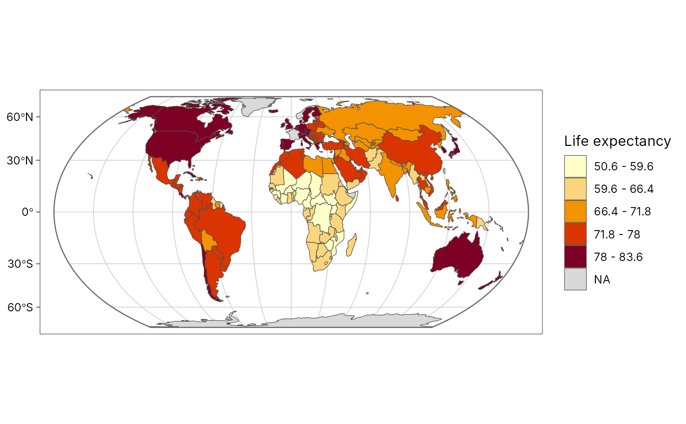
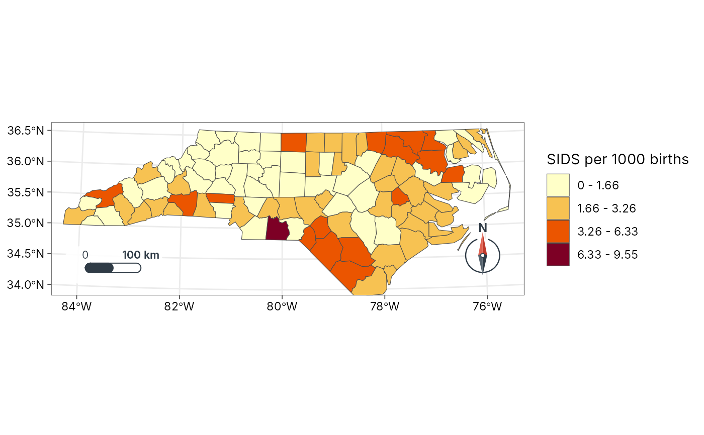
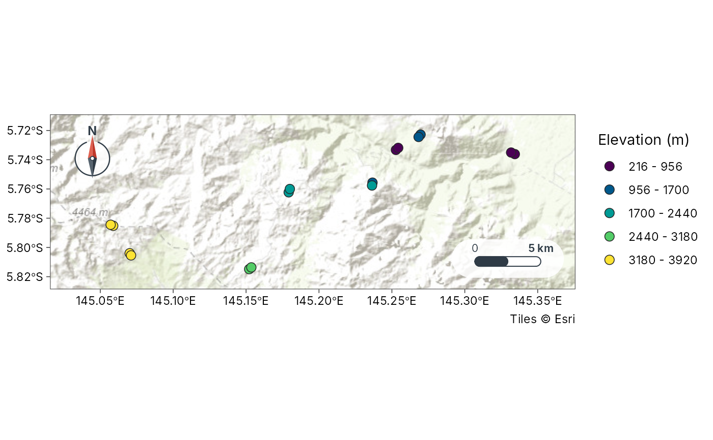
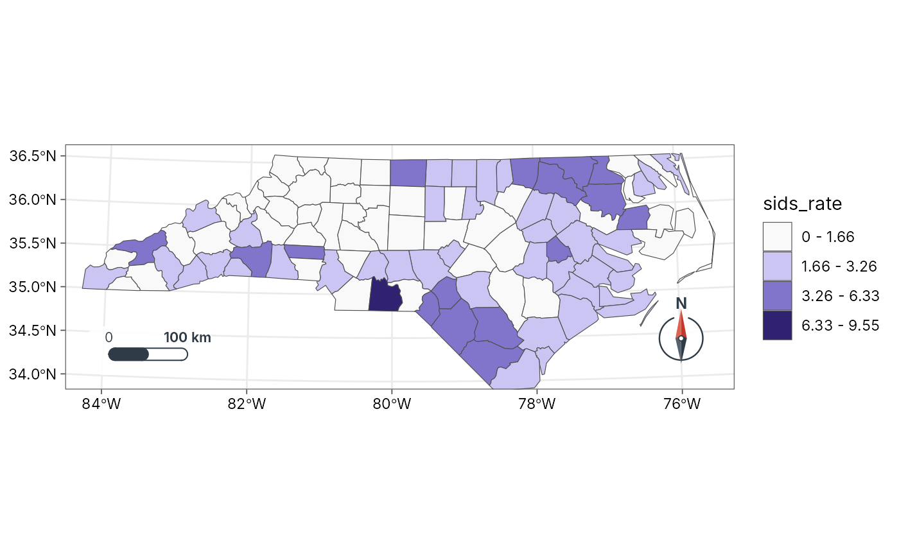
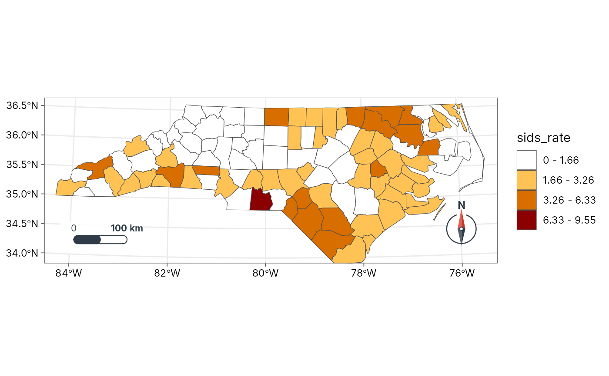
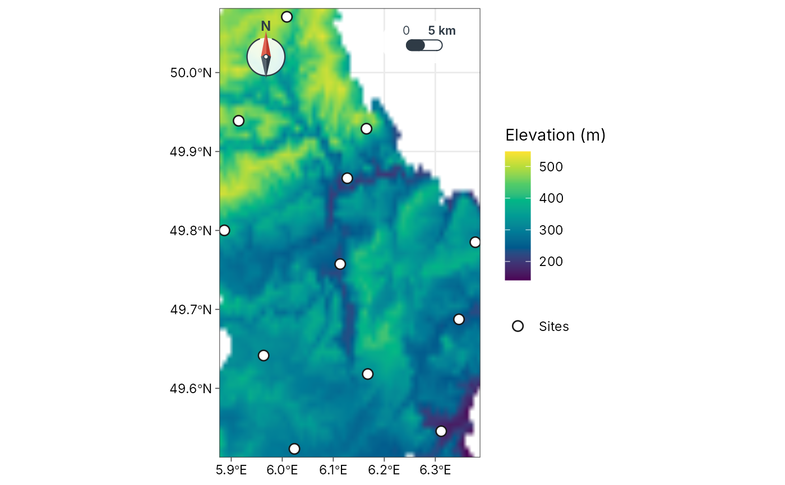

Automatic publication maps that explain their choices
geo_automap.Rdgeo_automap() draws a finished map from one call, in the spirit of
GeoSpaX's AutoMap. It looks at your data and chooses, with a reason for
each choice:
projection: Equal Earth for world-wide data (true areas), a Lambert azimuthal equal-area projection centred on the data for continents and large regions, and the local UTM zone for study areas (distances in metres);
symbology, following the conventions of GeoSpaX's AutoMap, ArcGIS and QGIS:
numbers on points, lines or polygons get graduated colours in classes (a classed legend, never a continuous ramp). The method follows the shape of the data: equal intervals when roughly symmetric (|skew| < 0.5), natural breaks (Jenks) when skewed, and quantiles when heavy-tailed (|skew| >= 2); 5 classes for 30 or more features, fewer for small samples;
the colour ramp follows the field's meaning: blues for water and rain, greens for vegetation, viridis for elevation, slope and predictions, a diverging ramp when values cross zero, and yellow-orange-red otherwise;
small whole-number counts on points get proportional circles;
categories get qualitative Okabe-Ito colours; features without a value get a single symbol;
continuous surfaces (a raster
x, or abackgroundsuch as a DEM under your sites) get a stretched colour ramp with a gradient legend, the only place a gradient legend is used;
basemap: none for world and regional maps or under a background surface; topographic tiles for study areas, as muted context that is not in the legend (the coastline when offline);
furniture: graticule and world outline on world maps; scale bar and north arrow on regional and local maps, in corners chosen to avoid the data.
Everything can be overridden through the arguments, and the result is a
normal ggplot you can keep editing. geo_automap_explain() returns the
decisions as a table, ready for a methods section.
Usage
geo_automap(
x,
value = NULL,
projection = "auto",
style = "auto",
n = "auto",
basemap = "auto",
background = NULL,
background_title = NULL,
palette = "auto",
background_palette = "auto",
title = NULL,
legend_title = NULL,
scale_bar = "auto",
north_arrow = "auto"
)
geo_automap_explain(map)Arguments
- x
An
sftable (points, lines or polygons) or aSpatRaster.- value
<
data-masking> Column to map. Omit to map the features alone (or the first raster layer).- projection
"auto"or any name accepted bycoord_projection().- style
"auto"or ageo_classify()style for graduated colours.- n
Number of classes, or
"auto"(5 for 30 or more features, fewer for small samples).- basemap
"auto"or a basemap name forgeo_basemap().- background
Optional continuous surface (
SpatRasteror file path), for example a DEM or a rainfall layer, drawn under the features with a gradient legend. With a background, the features are shown as sites (single symbol, or classes whenvalueis given) and no tile basemap is added.- background_title
Legend title for the background.
- palette, background_palette
Colour ramp for the features and for the background surface:
"auto"(chosen from the field's meaning), any palette name fromgrDevices::hcl.pals()(for example"viridis","Blues 3","YlOrRd","Terrain 2","RdYlBu"), or a vector of colours. For categories, a vector of colours replaces the Okabe-Ito colours.- title, legend_title
Map and legend titles.
- scale_bar, north_arrow
"auto",FALSE, or a style name (seeannotation_scale_bar()).- map
A map from
geo_automap().
Examples
# World: life expectancy by country (spData::world)
library(sf)
#> Linking to GEOS 3.12.1, GDAL 3.8.4, PROJ 9.4.0; sf_use_s2() is TRUE
m <- geo_automap(spData::world, lifeExp, legend_title = "Life expectancy")
m

geo_automap_explain(m)
#> # A tibble: 5 x 3
#> element choice reason
#> <chr> <chr> <chr>
#> 1 projection equal_earth Data span 360 degrees~
#> 2 symbology graduated colours (jenks, 5 classes, YlOrRd) 'lifeExp' is numeric ~
#> 3 basemap none Polygons, rasters and~
#> 4 graticule 30 degrees, world outline World map: graticule ~
#> 5 scale bar none Scale varies across a~
# Region: North Carolina SIDS rate 1974-78 (shipped with sf)
nc <- st_read(system.file("shape/nc.shp", package = "sf"), quiet = TRUE)
nc$sids_rate <- 1000 * nc$SID74 / nc$BIR74
geo_automap(nc, sids_rate, legend_title = "SIDS per 1000 births")

# Study area: the 16 Mt Wilhelm ant transects, classed by elevation
sites <- geo_as_sf(png_ants_sites, lon, lat)
geo_automap(sites, elevation, legend_title = "Elevation (m)")

# Choose your own ramps: an hcl palette name or any colours
geo_automap(nc, sids_rate, palette = "Purples 3")

geo_automap(nc, sids_rate, palette = c("white", "orange", "darkred"))

# Sites over a continuous surface: the surface gets the gradient legend
# (here Luxembourg's elevation, shipped with terra, under its cantons)
if (rlang::is_installed("terra")) {
dem <- terra::rast(system.file("ex/elev.tif", package = "terra"))
lux <- st_read(system.file("ex/lux.shp", package = "terra"), quiet = TRUE)
towns <- suppressWarnings(st_centroid(lux))
geo_automap(towns, background = dem, background_title = "Elevation (m)")
}
